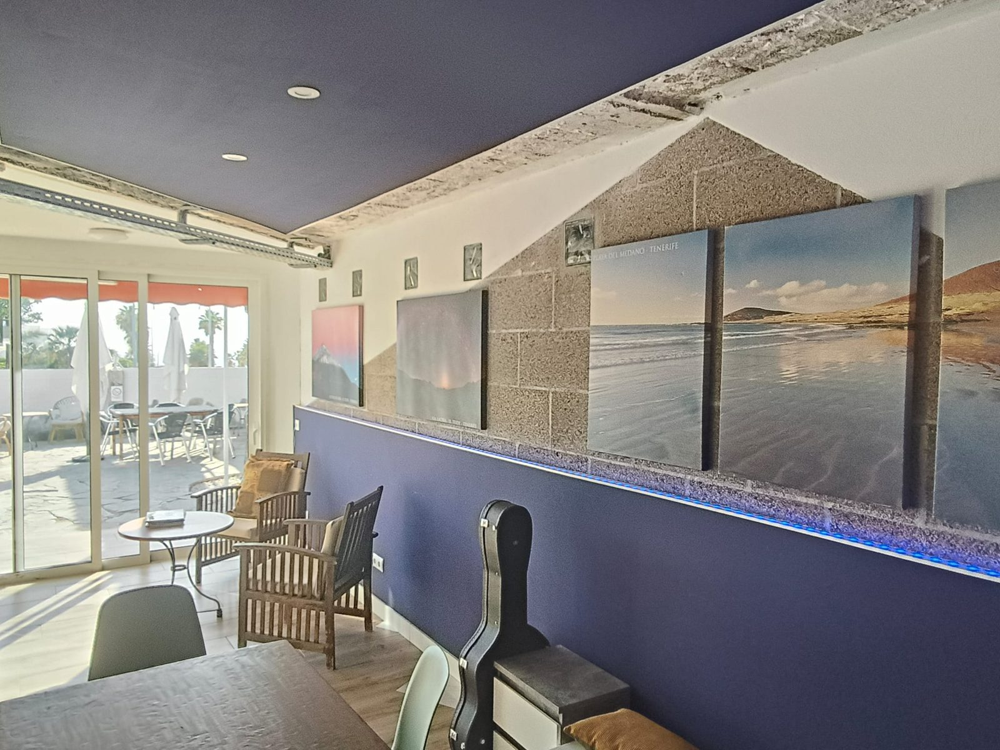
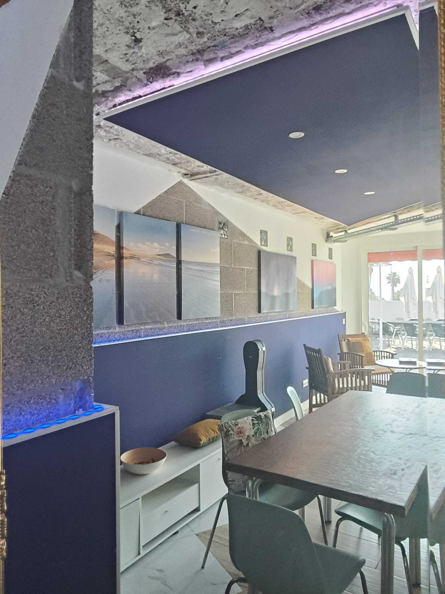
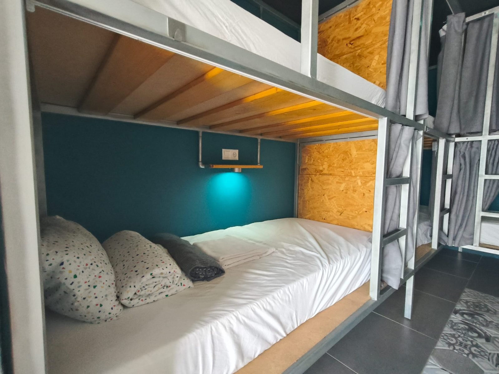
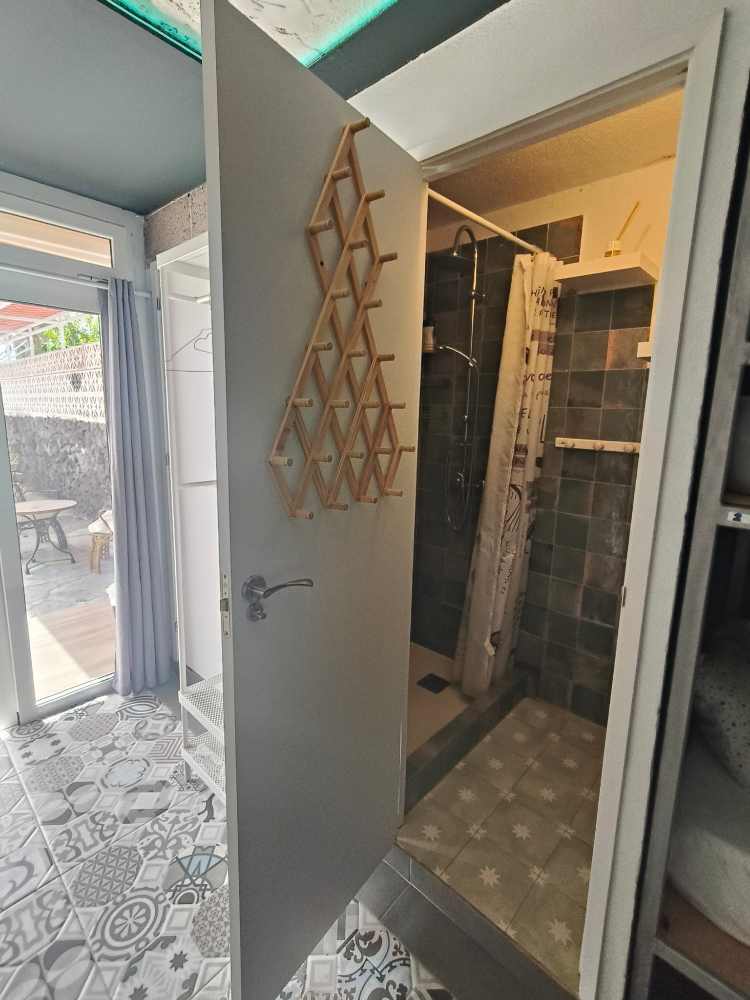
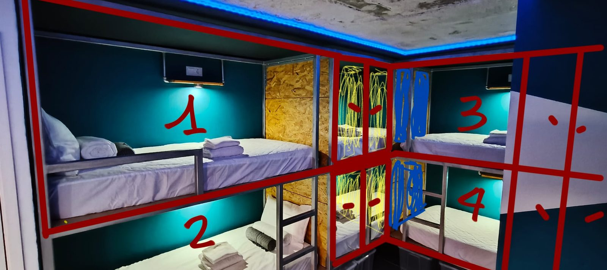
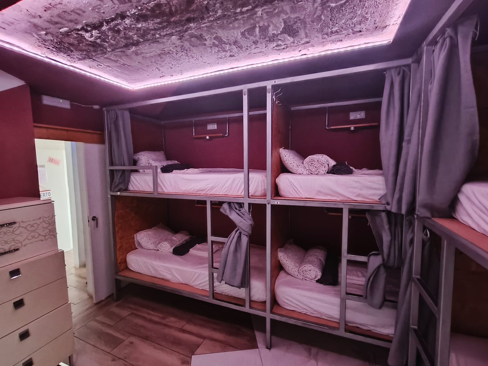
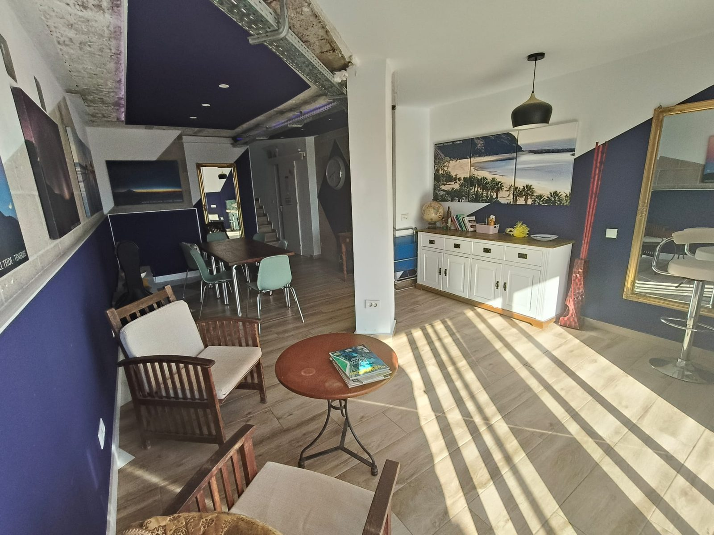
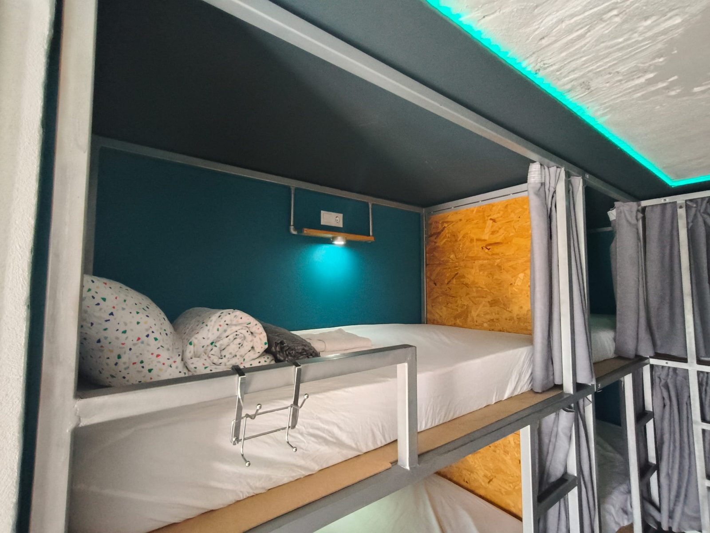
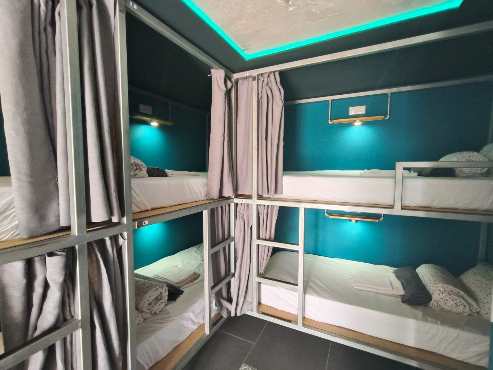
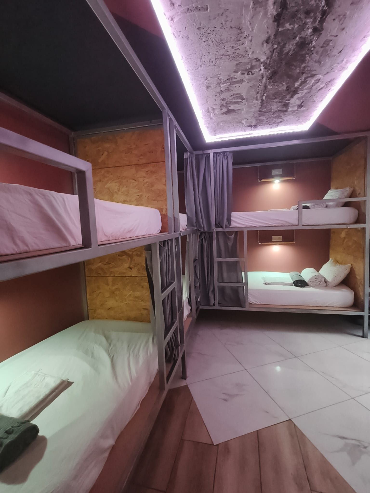
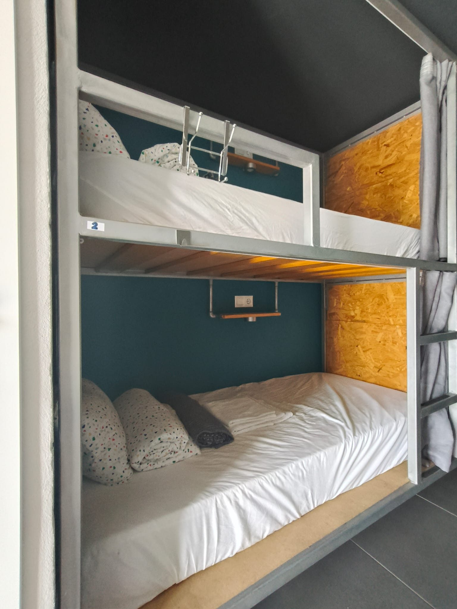
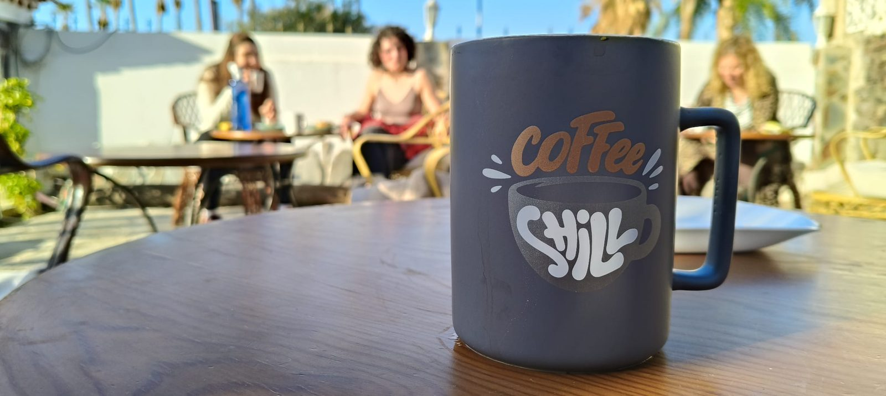
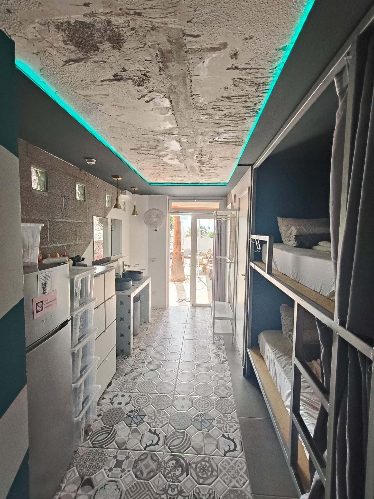
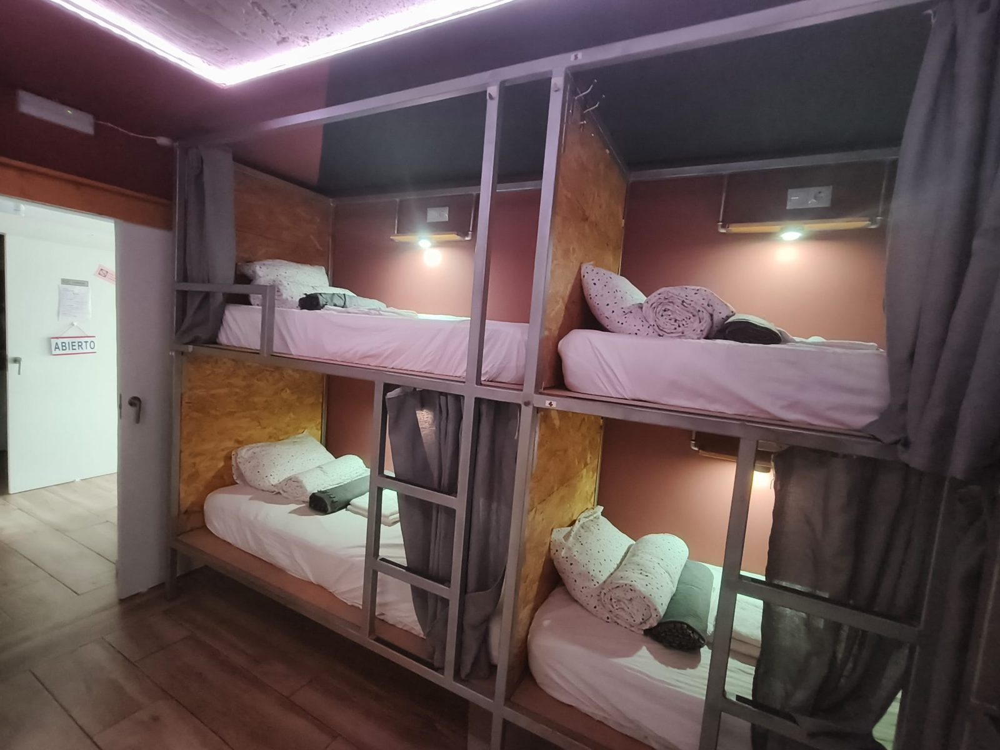
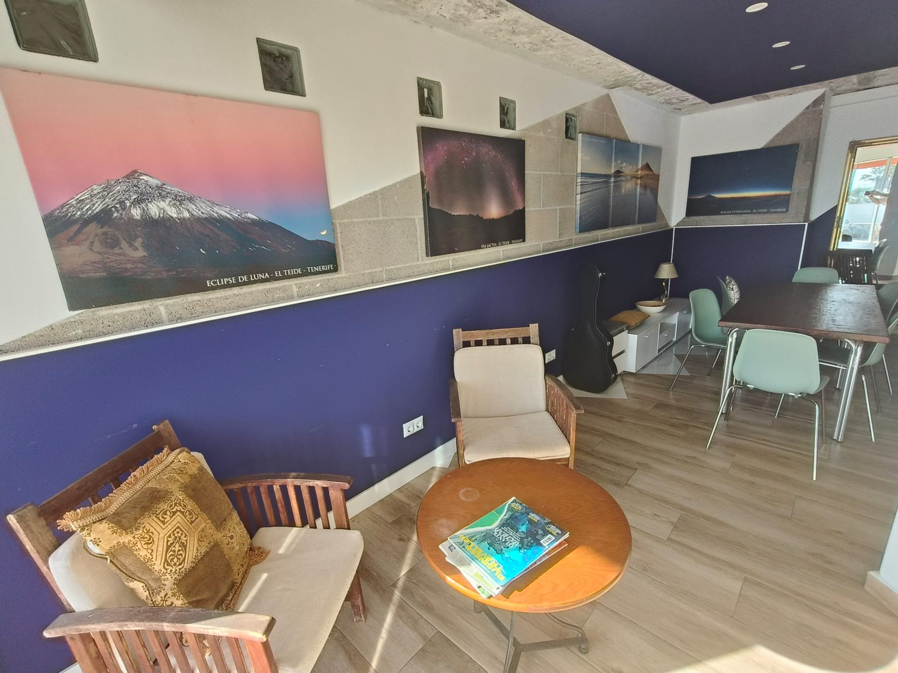
The Sisters' Hostel – Women Only Hostel è un ostello situato ad Adeje, a circa 900 metri da Playa del Bobo e 300 metri da Aqualand. La struttura dispone di giardino e WiFi gratuito, in una posizione comoda rispetto ad alcuni dei principali punti di interesse del sud di Tenerife.
Un ostello pensato esclusivamente per ospiti donne, in un ambiente curato e tranquillo, ideale per chi viaggia da sola o in gruppo e cerca comfort e sicurezza vicino alle attrazioni del sud dell'isola.
Molto apprezzata dagli ospiti (valutata 9,3), in posizione comoda rispetto ai principali punti di interesse del sud:
Contattaci per disponibilità e prezzi
💬 Contattaci su WhatsApp